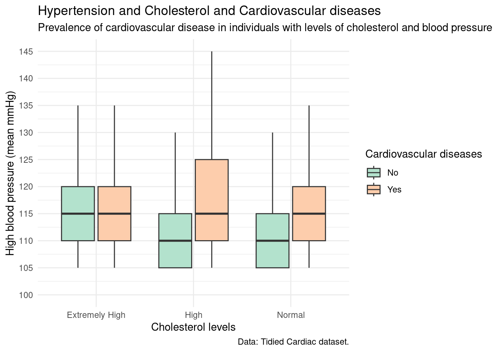
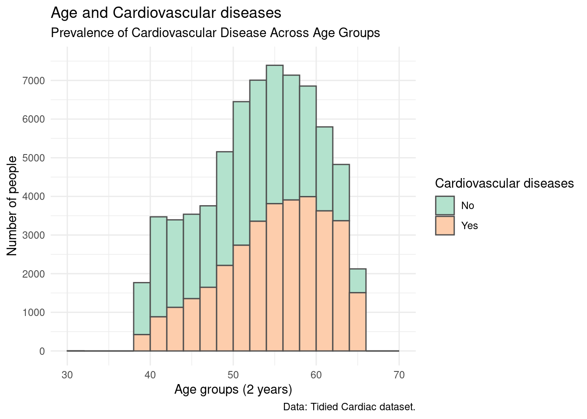
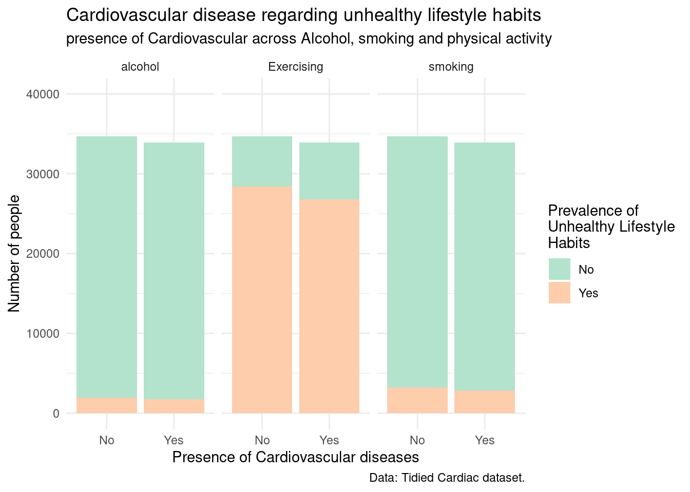

![]()
# Load Packages
library(tidyverse)
library(here)
library(ggthemes)
library(gt)
# Read Data
Cardiac_raw_data <- read.csv(here::here("data/raw/cardio_raw_data.csv"))Data exploration for Heart diseases and common habits
Abstract
This project explores the relationship between various health indicators, lifestyle habits, and the prevalence of cardiovascular diseases (CVDs) using a public dataset obtained from a GitHub repository. The analysis focused on key variables including age, systolic and diastolic blood pressure, cholesterol levels, glucose, BMI, and habits such as smoking, alcohol consumption, and physical activity. Data cleaning and transformation were performed to ensure consistency, and categorical variables were properly labeled and converted for analysis. The findings reveal that CVD prevalence increases significantly with age, especially in individuals over 56 years. People with high or normal cholesterol levels and elevated blood pressure tend to show a higher presence of CVDs, while those with extremely high cholesterol levels showed no clear difference. Furthermore, physical inactivity was strongly associated with the presence of cardiovascular disease, more so than smoking or alcohol intake. Additionally, individuals with CVD often presented with hypertension and BMI values indicating overweight or obesity. Future research could focus on the impact of height and weight, the role of glucose and diabetes, and the most common unhealthy behaviors by gender to further understand risk factors related to cardiovascular health.
Introduction
This project focuses on assessing habits associated with heart disease. The dataset includes information from randomly selected patients, covering systolic and diastolic blood pressure, body mass index (BMI), height and weight, as well as common lifestyle habits such as alcohol consumption and smoking.
Throughout the project, we analyzed the prevalence of unhealthy habits and how these correlate with the presence of cardiovascular diseases (CVDs). The initial dataset was obtained from a public GitHub repository.
Methods
Reading the Data
Here we present all the libraries that are going to be used along the project, and also the location of the initial data set.
Loading Packages
Data Exploration Approach
This dataset was obtained from a GitHub repository. The initial exploration included viewing the head of the data to get an overview of the variables, inspecting the data types, and examining the tail of the dataset to identify any potential inconsistencies or anomalies.
We also checked the dimensions of the dataset to ensure that all variables had the same number of observations. To clean the data, we addressed any missing values (NA values) and verified the integrity of categorical variables. This was done by summarizing the data, using count(n) for categorical variables to detect any unexpected entries, and calculating the mean for numerical variables to assess and handle missing data appropriately.
# Viewing the first rows
head(Cardiac_raw_data) #Looks like everything is good at the first 7 rows age gender height weight systolic diastolic cholesterol glucose smoke
1 51 Male 168 62 110 80 Normal Normal No
2 56 Female 156 85 140 90 Extremely High Normal No
3 52 Female 165 64 130 70 Extremely High Normal No
4 49 Male 169 82 150 100 Normal Normal No
5 48 Female 156 56 100 60 Normal Normal No
6 61 Female 151 67 120 80 High High No
alcohol_intake physical_activity cv_disease bmi
1 No Yes No 22.0
2 No Yes Yes 34.9
3 No No Yes 23.5
4 No Yes Yes 28.7
5 No No No 23.0
6 No No No 29.4glimpse(Cardiac_raw_data) # Age: int, gender: chr, height: int, weight: dbl, Sys: int, dias: int, Cholesterol: chr, Glucose: chr, smoke: chr, alcohol: chr, physical: chr, disease: chr, bmi: dblRows: 68,675
Columns: 13
$ age <int> 51, 56, 52, 49, 48, 61, 61, 62, 49, 55, 62, 52, 41, …
$ gender <chr> "Male", "Female", "Female", "Male", "Female", "Femal…
$ height <int> 168, 156, 165, 169, 156, 151, 157, 178, 158, 164, 16…
$ weight <dbl> 62, 85, 64, 82, 56, 67, 93, 95, 71, 68, 80, 60, 60, …
$ systolic <int> 110, 140, 130, 150, 100, 120, 130, 130, 110, 110, 12…
$ diastolic <int> 80, 90, 70, 100, 60, 80, 80, 90, 70, 60, 80, 80, 80,…
$ cholesterol <chr> "Normal", "Extremely High", "Extremely High", "Norma…
$ glucose <chr> "Normal", "Normal", "Normal", "Normal", "Normal", "H…
$ smoke <chr> "No", "No", "No", "No", "No", "No", "No", "No", "No"…
$ alcohol_intake <chr> "No", "No", "No", "No", "No", "No", "No", "No", "No"…
$ physical_activity <chr> "Yes", "Yes", "No", "Yes", "No", "No", "Yes", "Yes",…
$ cv_disease <chr> "No", "Yes", "Yes", "Yes", "No", "No", "No", "Yes", …
$ bmi <dbl> 22.0, 34.9, 23.5, 28.7, 23.0, 29.4, 37.7, 30.0, 28.4…tail(Cardiac_raw_data) age gender height weight systolic diastolic cholesterol glucose smoke
68670 58 Female 165 80 150 80 Normal Normal No
68671 53 Male 168 76 120 80 Normal Normal Yes
68672 62 Female 158 126 140 90 High High No
68673 53 Male 183 105 180 90 Extremely High Normal No
68674 62 Female 163 72 135 80 Normal High No
68675 57 Female 170 72 120 80 High Normal No
alcohol_intake physical_activity cv_disease bmi
68670 No Yes Yes 29.4
68671 No Yes No 26.9
68672 No Yes Yes 50.5
68673 Yes No Yes 31.4
68674 No No Yes 27.1
68675 No Yes No 24.9# Checking dimensions
dim(Cardiac_raw_data) #68,675 rows, 13 colums [1] 68675 13# looking at ages
Cardiac_raw_data |>
count(age) age n
1 30 3
2 31 1
3 40 1768
4 41 1596
5 42 1875
6 43 1391
7 44 2002
8 45 1476
9 46 2062
10 47 1591
11 48 2165
12 49 1779
13 50 3376
14 51 3145
15 52 3306
16 53 3193
17 54 3814
18 55 3526
19 56 3866
20 57 3514
21 58 3623
22 59 3313
23 60 3542
24 61 3126
25 62 2672
26 63 2140
27 64 2686
28 65 2124# looking at height
Cardiac_raw_data |>
count(height) height n
1 55 1
2 57 1
3 59 1
4 60 1
5 64 1
6 65 2
7 67 3
8 68 2
9 70 2
10 71 1
11 72 1
12 74 1
13 75 2
14 76 1
15 80 1
16 81 1
17 91 1
18 96 1
19 97 1
20 99 1
21 100 3
22 104 2
23 105 2
24 108 1
25 109 2
26 110 7
27 111 1
28 112 1
29 113 1
30 117 2
31 119 1
32 120 33
33 122 1
34 125 4
35 128 1
36 130 12
37 131 1
38 132 3
39 133 6
40 134 2
41 135 5
42 136 5
43 137 11
44 138 9
45 139 6
46 140 48
47 141 21
48 142 29
49 143 45
50 144 69
51 145 150
52 146 146
53 147 221
54 148 291
55 149 337
56 150 1027
57 151 599
58 152 1127
59 153 1037
60 154 1413
61 155 1738
62 156 2705
63 157 1781
64 158 3252
65 159 1963
66 160 4934
67 161 1669
68 162 3198
69 163 2484
70 164 3335
71 165 5755
72 166 1940
73 167 2496
74 168 4323
75 169 2748
76 170 4599
77 171 1283
78 172 1976
79 173 1054
80 174 1535
81 175 1774
82 176 1108
83 177 447
84 178 1203
85 179 410
86 180 856
87 181 188
88 182 321
89 183 155
90 184 149
91 185 225
92 186 103
93 187 76
94 188 45
95 189 36
96 190 40
97 191 11
98 192 12
99 193 6
100 194 2
101 195 6
102 196 6
103 197 4
104 198 14
105 207 1
106 250 1# looking at weight
Cardiac_raw_data |>
count(weight) weight n
1 11.00 1
2 21.00 1
3 22.00 1
4 23.00 1
5 28.00 1
6 29.00 1
7 30.00 3
8 31.00 1
9 32.00 3
10 33.00 1
11 34.00 4
12 35.00 2
13 35.45 1
14 36.00 5
15 37.00 7
16 38.00 7
17 39.00 9
18 40.00 42
19 41.00 35
20 42.00 49
21 42.20 1
22 43.00 55
23 44.00 66
24 45.00 120
25 45.80 1
26 46.00 94
27 47.00 112
28 48.00 180
29 49.00 173
30 50.00 494
31 50.70 1
32 51.00 274
33 51.50 1
34 52.00 532
35 52.30 1
36 53.00 421
37 53.20 1
38 53.30 1
39 53.50 1
40 53.60 1
41 53.67 1
42 53.90 1
43 54.00 582
44 54.35 1
45 54.50 2
46 55.00 747
47 55.20 1
48 55.40 1
49 55.60 1
50 56.00 960
51 56.20 2
52 57.00 704
53 57.40 1
54 57.60 1
55 57.80 2
56 58.00 1321
57 58.50 1
58 58.70 1
59 58.80 1
60 59.00 1008
61 59.20 1
62 59.50 2
63 59.80 1
64 60.00 2680
65 60.10 1
66 60.20 1
67 60.50 1
68 60.60 1
69 61.00 965
70 61.20 1
71 61.30 1
72 61.50 3
73 62.00 1823
74 62.20 1
75 62.30 2
76 62.40 2
77 62.50 2
78 62.70 1
79 63.00 1597
80 63.40 1
81 63.80 1
82 63.82 1
83 64.00 1568
84 64.10 1
85 64.30 1
86 64.50 5
87 64.70 1
88 64.80 1
89 65.00 3796
90 65.30 1
91 65.50 2
92 66.00 1362
93 66.30 1
94 66.40 1
95 66.50 3
96 67.00 1597
97 67.30 1
98 67.50 3
99 67.80 1
100 67.90 2
101 68.00 2786
102 68.20 2
103 68.30 1
104 68.40 2
105 68.50 6
106 68.90 1
107 69.00 2161
108 69.50 6
109 69.80 2
110 70.00 3705
111 70.20 2
112 70.30 1
113 70.50 2
114 70.70 1
115 70.80 1
116 71.00 1421
117 71.20 1
118 71.30 2
119 71.50 3
120 72.00 2262
121 72.10 2
122 72.50 4
123 72.80 1
124 73.00 1418
125 73.20 3
126 73.50 1
127 73.80 1
128 74.00 1832
129 74.20 2
130 74.30 1
131 74.50 1
132 74.77 1
133 75.00 2693
134 75.20 1
135 75.50 2
136 75.60 1
137 76.00 1496
138 76.50 2
139 76.70 2
140 76.80 1
141 77.00 956
142 78.00 2044
143 78.20 2
144 78.50 1
145 79.00 1269
146 79.50 2
147 79.94 1
148 80.00 2577
149 80.50 3
150 80.70 1
151 80.80 1
152 81.00 871
153 81.10 1
154 82.00 1291
155 82.10 1
156 82.30 3
157 82.40 1
158 82.50 3
159 82.90 1
160 83.00 967
161 83.50 2
162 83.60 1
163 84.00 1074
164 84.30 1
165 84.50 1
166 84.60 1
167 84.70 1
168 84.80 1
169 84.90 1
170 85.00 1631
171 85.50 2
172 86.00 932
173 86.50 2
174 87.00 773
175 88.00 725
176 88.50 2
177 89.00 850
178 89.10 1
179 89.50 1
180 89.90 1
181 90.00 1302
182 90.50 2
183 90.70 1
184 91.00 431
185 92.00 703
186 92.20 1
187 93.00 531
188 94.00 477
189 94.50 1
190 94.70 1
191 95.00 710
192 96.00 419
193 96.50 1
194 97.00 382
195 98.00 467
196 99.00 236
197 99.90 1
198 100.00 574
199 101.00 167
200 102.00 253
201 103.00 227
202 104.00 177
203 105.00 350
204 105.50 1
205 106.00 144
206 106.40 1
207 106.50 1
208 107.00 110
209 108.00 150
210 109.00 111
211 109.50 1
212 109.70 1
213 110.00 241
214 111.00 61
215 112.00 113
216 113.00 74
217 114.00 61
218 114.60 1
219 115.00 119
220 116.00 48
221 117.00 53
222 118.00 51
223 119.00 31
224 120.00 111
225 121.00 22
226 121.30 1
227 121.80 1
228 122.00 21
229 123.00 34
230 124.00 23
231 125.00 38
232 126.00 24
233 127.00 23
234 128.00 21
235 129.00 15
236 130.00 50
237 131.00 13
238 132.00 9
239 133.00 10
240 134.00 11
241 135.00 21
242 136.00 9
243 137.00 2
244 138.00 5
245 139.00 5
246 140.00 16
247 141.00 4
248 142.00 4
249 143.00 2
250 144.00 3
251 145.00 5
252 146.00 1
253 147.00 1
254 148.00 2
255 149.00 2
256 150.00 12
257 152.00 2
258 153.00 1
259 154.00 2
260 155.00 3
261 156.00 3
262 158.00 2
263 159.00 2
264 160.00 2
265 161.00 2
266 162.00 2
267 163.00 1
268 164.00 3
269 165.00 6
270 166.00 2
271 167.00 2
272 168.00 3
273 169.00 1
274 170.00 3
275 171.00 1
276 172.00 1
277 177.00 1
278 178.00 3
279 180.00 4
280 183.00 1
281 200.00 2# Sumarise to see if there is any NA
Cardiac_raw_data |>
summarise(mean_age = mean(age),
mean_height = mean(height),
mean_weight = mean(weight),
mean_systolic = mean(systolic),
mean_diastolic = mean(diastolic),
mean_bmi = mean(bmi)) #No NAs found mean_age mean_height mean_weight mean_systolic mean_diastolic mean_bmi
1 53.82365 164.3608 74.10954 126.5956 81.29316 27.51717#How many times each chr variable appers, and if there is any miswriting
Cardiac_raw_data |>
group_by(gender) |> # female 44,737 male 23,938 = 68,675
summarise(count = n())# A tibble: 2 × 2
gender count
<chr> <int>
1 Female 44737
2 Male 23938Cardiac_raw_data |>
group_by(cholesterol) |> #Extermely High 7,864 High 9,296 Normal 51,515 = 68,675
summarise(count = n())# A tibble: 3 × 2
cholesterol count
<chr> <int>
1 Extremely High 7864
2 High 9296
3 Normal 51515Cardiac_raw_data |>
group_by(glucose) |> # Extremely High 5,218 High 5,059 Normal 58,398 = 68,675
summarise(count = n())# A tibble: 3 × 2
glucose count
<chr> <int>
1 Extremely High 5218
2 High 5059
3 Normal 58398Cardiac_raw_data |>
group_by(smoke) |> #NO 62,635 Yes 6,040 = 68,675
summarise(count = n())# A tibble: 2 × 2
smoke count
<chr> <int>
1 No 62635
2 Yes 6040Cardiac_raw_data |>
group_by(alcohol_intake) |> # No 65,007 Yes 3,668 = 68,675
summarise(count = n())# A tibble: 2 × 2
alcohol_intake count
<chr> <int>
1 No 65007
2 Yes 3668Cardiac_raw_data |>
group_by(physical_activity) |> #No 13,509 Yes 55,166 = 68,675
summarise(count = n())# A tibble: 2 × 2
physical_activity count
<chr> <int>
1 No 13509
2 Yes 55166Cardiac_raw_data |>
group_by(cv_disease) |> # No 34,724 Yes 33,951 = 68,675
summarise(count = n())# A tibble: 2 × 2
cv_disease count
<chr> <int>
1 No 34724
2 Yes 33951Initial Data Tidying
We began by creating vectors for the categorical variables. In this step, we defined binary vectors for “Yes” and “No” responses, gender (“Female” and “Male”), and cholesterol and glucose levels, categorized as “Extremely High,” “High,” and “Normal.”
After creating these vectors, we saved the tidied dataset into a new object in preparation for exporting it as a csv file. Within this object, we mutated the categorical variables into factors, renamed them for clarity, and reordered the columns to improve the dataset’s presentation and readability.
#Creating vectors that would be converted into factors later
Vector_yes_no <- c("Yes", "No") #This vector would be use into the Yes No answers for Smoking, alcohol, physical activity and cardiovascular disease
Vector_levels_glu_and_cho <- c("Extremely High", "High", "Normal") #This vector would be use for the answers in Cholesterol and glucose levels
Vector_gender <- c("Female", "Male") #this vector would be use into the gender answers
# Creating the new tidied data set
Tidied_cardiac_data <- Cardiac_raw_data |>
#Mutating from chr to factor
mutate(gender_fct = factor(gender, levels = Vector_gender),
cholesterol_fct = factor(cholesterol, levels = Vector_levels_glu_and_cho),
glucose_fct = factor(glucose, levels= Vector_levels_glu_and_cho),
smoke_fct = factor(smoke, levels = Vector_yes_no),
alcohol_fct = factor(alcohol_intake, levels = Vector_yes_no),
physical_activity_fct = factor(physical_activity, levels = Vector_yes_no),
cv_disease_fct = factor(cv_disease, levels = Vector_yes_no)) |>
#Selecting the new column factors and numeric variables
select(age,
gender_fct,
height,
weight,
systolic,
diastolic,
cholesterol_fct,
glucose_fct,
smoke_fct,
alcohol_fct,
physical_activity_fct,
cv_disease_fct,
bmi) |>
#Renaming the colums
rename(gender = gender_fct,
cholesterol = cholesterol_fct,
glucose = glucose_fct,
smoke = smoke_fct,
alcohol_intake = alcohol_fct,
physical_act= physical_activity_fct,
Cardiovascular_disease = cv_disease_fct) |>
#Relocating bmi after diastolic
relocate(bmi, .after = diastolic)
#Saving results
write_csv(Tidied_cardiac_data, here::here("data/processed/tidied_Cardiac_data.csv"))Data visualization.
First of All, we will read the tidied dataset that we created in the previous section.
Tidied_cardiac_data <- read.csv(here::here("data/processed/tidied_Cardiac_data.csv"))In this section, we present visualizations of the dataset focused on extracting relevant insights. Specifically, we aim to explore whether there is a relationship between high blood pressure (defined as values above 130/80 mmHg), cholesterol levels, and the presence of cardiovascular disease (CVD).
Additionally, we seek to answer the question of which age groups have more cardiovascular disease, based on the available data.
Finally, we examine the prevalence of cardiovascular disease in relation to lifestyle factors, such as alcohol consumption, smoking, and physical activity.
Figure 1.
Hypertension vs Cholesterol levels and Cardiovascular diseases.
High_Pressure_Cholesterol_CV_disease<- Tidied_cardiac_data |>
select(systolic, diastolic, cholesterol, Cardiovascular_disease) |>
filter(systolic >= 130 & diastolic >= 80) |>
mutate(High_Pressure = (systolic + diastolic) / 2)
ggplot(data = High_Pressure_Cholesterol_CV_disease,
mapping = aes(x = cholesterol,
y = High_Pressure,
fill= Cardiovascular_disease)) +
geom_boxplot(outlier.shape = NA) +
scale_y_continuous(breaks = seq(100, 145, 5), limits = c(100, 145)) +
scale_fill_brewer(type = "qual", palette = 5) +
labs(title = "Hypertension and Cholesterol and Cardiovascular diseases",
subtitle = "Prevalence of cardiovascular disease in individuals with levels of cholesterol and blood pressure",
x = "Cholesterol levels",
y = "High blood pressure (mean mmHg)",
fill = "Cardiovascular diseases",
caption = "Data: Tidied Cardiac dataset."
) +
theme_minimal(base_size = 11)

Figure 1 presents a visualization comparing groups of individuals with extremely high, high, and normal cholesterol levels, distinguishing between those with and without cardiovascular disease (CVD). The dataset has been filtered to include only individuals with hypertension, defined as having an average systolic blood pressure above 130 mmHg and diastolic blood pressure above 80 mmHg.
The figure uses a boxplot to display the distribution of mean blood pressure across the different cholesterol level groups, highlighting the average values, identifying outliers, and illustrating the prevalence of CVD within each group.
From the chart, we observe that individuals with high and normal cholesterol levels tend to have higher blood pressure if they also have cardiovascular disease, compared to those without CVD. Notably, these groups also show a higher average blood pressure, around 115 mmHg, among individuals with CVD, while those without CVD have a lower mean of approximately 110 mmHg.
In contrast, for the group with extremely high cholesterol levels, there is no significant difference in mean blood pressure between individuals with and without CVD; both subgroups show an average close to 115 mmHg.
Figure 2.
Age distribution and Cardiovascular disease.
cv_disease_age <- Tidied_cardiac_data |>
select(age, Cardiovascular_disease)
ggplot(data = cv_disease_age,
mapping = aes(x = age,
fill = Cardiovascular_disease)) +
geom_histogram(col = "grey30",
breaks = seq(30, 70, 2)) +
scale_fill_brewer(type = "qual", palette = 5) +
scale_y_continuous(breaks = seq(0, 7500, 1000), limits = c(0, 7500)) +
labs(title = "Age and Cardiovascular diseases",
subtitle = "Prevalence of Cardiovascular Disease Across Age Groups",
x = "Age groups (2 years)",
y = "Number of people",
fill = "Cardiovascular diseases",
caption = "Data: Tidied Cardiac dataset."
) +
theme_minimal(base_size = 11)

Figure 2 presents a histogram illustrating the age distribution of the population, grouped in two-year intervals, starting from 38 years old and ending at 66 years old. The chart also differentiates between individuals with and without cardiovascular disease (CVD): light green bars represent people without CVD, while light orange bars represent those with CVD.
The distribution of both groups follows a pattern similar to a Gaussian bell curve, with a noticeable peak in the 56–58 age range. This visualization provides key insights: overall, we can observe that younger individuals are less likely to have CVD, whereas the prevalence of CVD increases with age, reaching almost 80% in the 65–66 age group.
Figure 3.
Cardiac disease with the intake of alcohol, smoking and physical activity.
bad_habits <- Tidied_cardiac_data |>
select(alcohol_intake, smoke, physical_act, Cardiovascular_disease) |>
group_by(alcohol_intake, smoke, physical_act, Cardiovascular_disease) |>
rename(alcohol = alcohol_intake,
smoking = smoke,
Exercising = physical_act) |>
pivot_longer(c("alcohol", "smoking", "Exercising"), names_to = "Habit", values_to = "Y_o_N")
ggplot(data = bad_habits,
mapping = aes(x = Cardiovascular_disease,
fill = Y_o_N)) +
geom_bar() +
facet_wrap(~Habit) +
scale_size(range = c(2, 12)) +
scale_y_continuous(breaks = seq(0, 40000, 10000), limits = c(0, 40000)) +
scale_fill_brewer(type = "qual", palette = 5) +
labs(title = "Cardiovascular disease regarding unhealthy lifestyle habits",
subtitle = "presence of Cardiovascular across Alcohol, smoking and physical activity",
x = "Presence of Cardiovascular diseases",
y = "Number of people",
fill = "Prevalence of
Unhealthy Lifestyle
Habits",
caption = "Data: Tidied Cardiac dataset."
) +
theme_minimal(base_size = 11)

Figure 3 is a grouped bar chart displaying the frequency of individuals engaging in unhealthy habits such as alcohol consumption, lack of physical activity, and smoking. The x-axis represents the presence or absence of cardiovascular disease (CVD), while the bar colors indicate whether or not the individual engages in the activity: light green for No and light orange for Yes.
Regarding alcohol consumption, the data shows that very few individuals engage in this habit, regardless of whether they have CVD or not. In terms of physical activity, both groups, those with and without CVD, show a high prevalence of regular exercise. Finally, in the case of smoking, only a small portion of individuals in either group report smoking, though this number is slightly higher than that for alcohol consumption.
Table 1.
Statistics.
Tidied_cardiac_data |>
filter(age >= 54 & systolic >= 130 & diastolic >= 80 & smoke == "Yes" & alcohol_intake == "Yes" & physical_act == "No" & Cardiovascular_disease == "Yes") |>
group_by(age) |>
summarise(count = n(),
mean_age = mean(age),
mean_systolic = mean(systolic),
sd_systolic = sd(systolic),
mean_diastolic = mean(diastolic),
sd_diastolic = sd(diastolic),
mean_bmi = mean(bmi),
sd_bmi = sd(bmi)
) |>
ungroup() |>
gt() |>
fmt_number(columns = c(mean_systolic, mean_diastolic),
decimals = 1)| age | count | mean_age | mean_systolic | sd_systolic | mean_diastolic | sd_diastolic | mean_bmi | sd_bmi |
|---|---|---|---|---|---|---|---|---|
| 54 | 8 | 54 | 148.8 | 24.748737 | 87.5 | 7.071068 | 28.92500 | 6.101932 |
| 55 | 4 | 55 | 150.0 | 11.547005 | 87.5 | 5.000000 | 27.77500 | 2.809953 |
| 56 | 7 | 56 | 146.4 | 16.511179 | 91.4 | 6.900656 | 28.24286 | 4.591607 |
| 57 | 2 | 57 | 140.0 | 0.000000 | 85.0 | 7.071068 | 30.10000 | 8.909545 |
| 58 | 7 | 58 | 148.6 | 13.451854 | 91.4 | 8.997354 | 30.01429 | 4.503861 |
| 59 | 3 | 59 | 140.0 | 10.000000 | 86.7 | 5.773503 | 28.46667 | 2.400694 |
| 60 | 8 | 60 | 143.8 | 19.226098 | 83.8 | 5.175492 | 30.76250 | 6.820335 |
| 61 | 2 | 61 | 145.0 | 7.071068 | 95.0 | 7.071068 | 27.10000 | 3.676955 |
| 62 | 9 | 62 | 145.0 | 15.411035 | 93.3 | 10.000000 | 29.72222 | 5.159888 |
| 63 | 5 | 63 | 140.0 | 10.000000 | 88.0 | 8.366600 | 27.38000 | 4.018955 |
| 64 | 2 | 64 | 140.0 | 14.142136 | 85.0 | 7.071068 | 31.45000 | 10.253048 |
| 65 | 7 | 65 | 144.3 | 7.867958 | 87.1 | 4.879500 | 27.31429 | 7.115811 |
Table 1 presents the distribution and averages of key health indicators for individuals aged 54 and above, filtered by specific risk factors. These include: systolic blood pressure over 130 mmHg, diastolic blood pressure over 80 mmHg, smoking status, alcohol consumption, lack of physical activity, presence of cardiovascular disease (CVD), and BMI.
The table displays the mean values per age group, along with the corresponding standard deviations for each variable, providing insight into both central tendencies and data variability among older adults with elevated cardiovascular risk.
Results
Figure 1 shows the prevalence of cardiovascular diseases among individuals with a mean blood pressure above 110 mmHg and normal or high cholesterol levels. This pattern may be explained by reduced arterial and venous lumen, limiting blood flow, as discussed in Félix-Redondo et al. (2013).
However, for individuals with extremely high cholesterol levels, there is no significant difference in the presence or absence of cardiovascular disease. Interestingly, the most uncommon cases appear in the high cholesterol group, particularly among those with cardiovascular disease, driven by one outlier with a mean blood pressure around 145 mmHg.
Figure 2 shows the distribution of ages and the prevalence of cardiovascular diseases (CVDs) across different age ranges. In this case, the data reveals a clear trend: as age increases, the prevalence of CVDs also rises, with a more noticeable increase starting from age 56 and above.
In fact, the older the individuals, the more common cardiovascular diseases become, indicating a strong correlation between aging and the risk of developing CVD.
Figure 3 shows a triple-variable correlation graph, illustrating the frequency and distribution of cardiovascular disease (CVD) in relation to unhealthy habits such as alcohol consumption, smoking, and lack of physical activity.
Interestingly, the data shows that individuals who smoke or consume alcohol appear to have a lower prevalence of CVD. However, this trend is likely due to the small number of individuals in the dataset who report engaging in these habits, which limits the strength of this observation.
In contrast, when it comes to physical activity, there is a clearer pattern: individuals who exercise regularly tend to have a lower prevalence of CVD, while those who do not engage in physical activity show a higher incidence of cardiovascular conditions.
in Table 1 presents the distribution and average values of age, systolic and diastolic blood pressure, and BMI. The data shown includes only participants who meet all of the following criteria: high blood pressure (above 130/80 mmHg), are active smokers, consume alcohol, lack physical activity, and have been diagnosed with cardiovascular disease (CVD).
From the table, we can observe that the most common age among this group is 62 years. Notably, none of the individuals have a systolic pressure below 140 mmHg or a diastolic pressure below 83 mmHg, confirming the presence of consistently high blood pressure.
In terms of BMI, all participants have values above 27, which falls into the overweight category. Some individuals even reach BMI values consistent with obesity, highlighting an elevated risk profile across multiple health factors (Khanna et al., 2022).
Conclusions
Summary of Findings
Individuals with normal and high cholesterol levels and mean blood pressure over 110 mmHg show a higher prevalence of CVD
CVD prevalence increases with age, showing a sharp rise from age 56 and above.
Due to the small number of individuals reporting alcohol consumption or smoking, their relation to CVD in this dataset appears weak or inconclusive.
BMI values were above 27 in all cases, indicating overweight or obesity, which further increases CVD risk.
Questions and Next Steps
Some of the next steps for further analysis include exploring the relationship between height and weight and their impact on the prevalence of cardiovascular diseases (CVDs), with a particular focus on whether taller or heavier individuals are more susceptible. Additionally, it would be valuable to investigate the role of glucose levels and assess the potential influence of diabetes as a contributing factor to CVD. Another important direction would be to examine the most common unhealthy behaviors by gender, identifying whether patterns such as smoking, alcohol consumption, or lack of physical activity differ between males and females, and how these differences may affect cardiovascular risk.
Bibliographies
Félix-Redondo, F. J., Grau, M., & Fernández-Bergés, D. (2013). Cholesterol and cardiovascular disease in the elderly. Facts and gaps. Aging and Disease, 4(3), 154.
Khanna, D., Peltzer, C., Kahar, P., & Parmar, M. S. (2022). Body mass index (BMI): A screening tool analysis. Cureus, 14(2).
Reuse
Citation
BibTeX citation:
@online{daniel_trujillo_sandoval2025,
author = {Daniel Trujillo Sandoval, Jose},
title = {Data Exploration for {Heart} Diseases and Common Habits},
date = {2025-07-14},
url = {https://www.example.com},
langid = {en},
abstract = {This project explores the relationship between various
health indicators, lifestyle habits, and the prevalence of
cardiovascular diseases (CVDs) using a public dataset obtained from
a GitHub repository. The analysis focused on key variables including
age, systolic and diastolic blood pressure, cholesterol levels,
glucose, BMI, and habits such as smoking, alcohol consumption, and
physical activity. Data cleaning and transformation were performed
to ensure consistency, and categorical variables were properly
labeled and converted for analysis. The findings reveal that CVD
prevalence increases significantly with age, especially in
individuals over 56 years. People with high or normal cholesterol
levels and elevated blood pressure tend to show a higher presence of
CVDs, while those with extremely high cholesterol levels showed no
clear difference. Furthermore, physical inactivity was strongly
associated with the presence of cardiovascular disease, more so than
smoking or alcohol intake. Additionally, individuals with CVD often
presented with hypertension and BMI values indicating overweight or
obesity. Future research could focus on the impact of height and
weight, the role of glucose and diabetes, and the most common
unhealthy behaviors by gender to further understand risk factors
related to cardiovascular health.}
}
For attribution, please cite this work as:
Daniel Trujillo Sandoval, J. (2025, July 14). Data exploration for
Heart diseases and common habits. My Blog. https://www.example.com